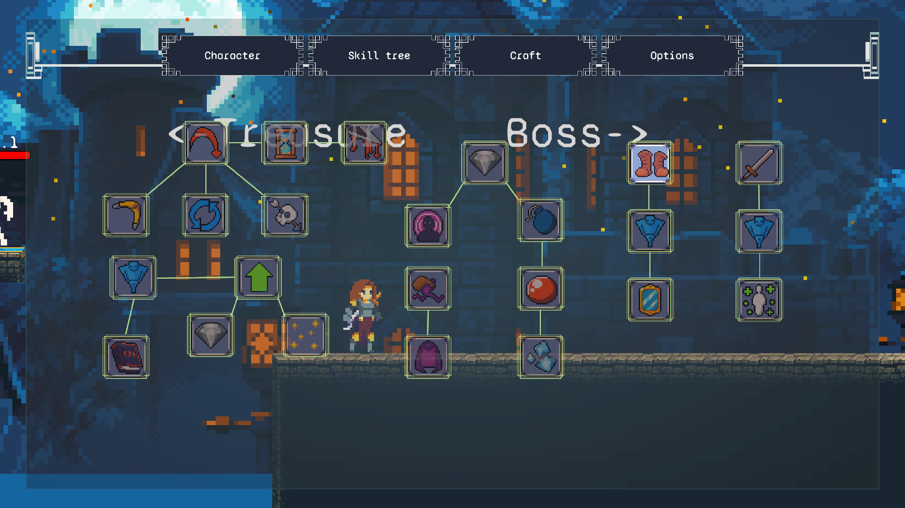

Whisper Gold – 2D RPG Game on Unity
Development Duration: 2 months
A feature-complete 2D RPG created during self-learning, featuring combat, skill systems, equipment, crafting, saving, and more.
Link to game:
https://xiaoqigai.itch.io/xiaoqigaifirst
Key Features
Skill System
Includes dash, aiming sword, blackhole, magical crystal, clone summon, parry.
Skill manager supports cooldown, damage, and effect adjustments.
Integrated with a functional skill tree system with unlock rules.
Gear & Item System
Armor, weapons, amulets, and flasks.
Dynamic stat modifications and special effects.
Includes loot drop and crafting systems.
UI System
Stats, skill tree, crafting, options, tooltips, inventory, and equipment.
Health bars, cooldowns, money display.
Interactive gear interface for equip/unequip.
Main menu and scene transitions.
Save & Load
Checkpoint-based saving.
Load full game state including player stats, items, and position.
Environment & Interaction
Weather system with dynamic fire rain via Particle System.
Environment interaction using collision detection for chests, etc.
Character & Combat System
Full animation-based combat using state machines.
Multiple states: Idle, Move, Jump, Attack, Battle, Dead.
Real-time UI updates for health and money.
Audio System
Automatic BGM playback.
In-game audio settings for music/SFX volume.